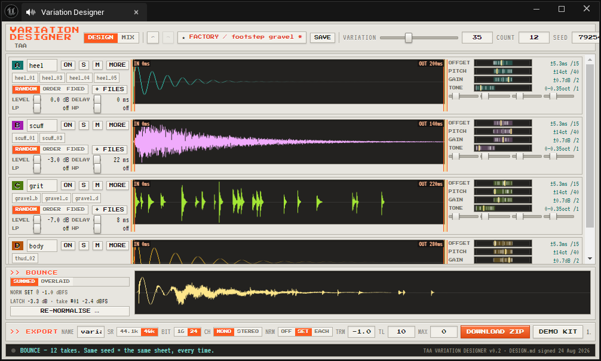
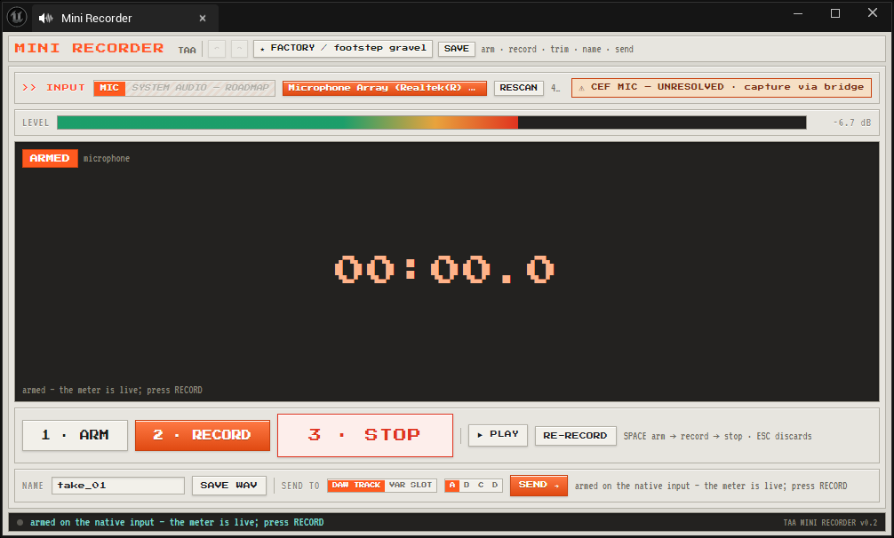
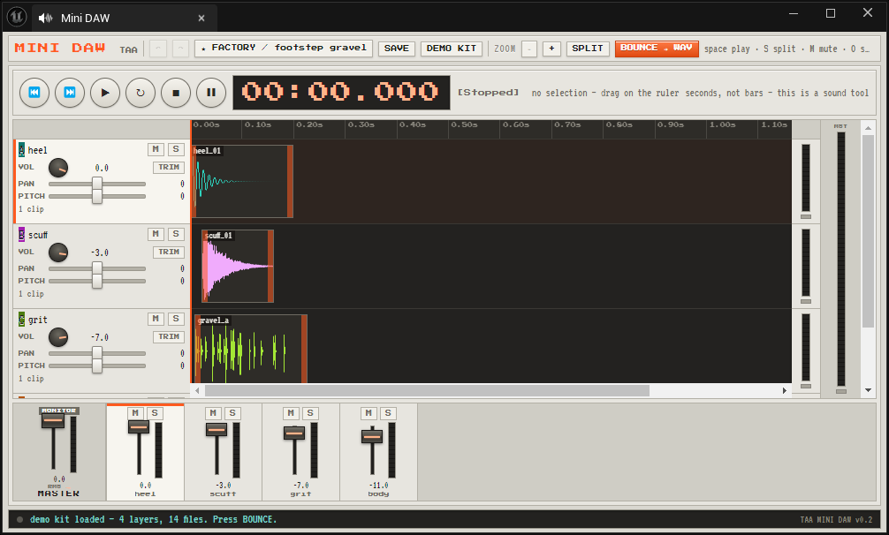

Get a sound in. Do the quick edit. Turn it into twenty. Three small tools that hand work to each other, built to live in a tab inside the Unreal Editor — so the job never sends you out to a DAW and back.
All three run free in your browser right now. No install, no account, and your files never leave your machine.

Game sound needs the same thing over and over: the same footstep, twenty times, never identical. The usual answers are to record twenty, or to jitter the pitch at playback and hope nobody notices. Pitch-shifting scales a sound whole, which is exactly why a random-pitch footstep still sounds like one footstep.
The variation that actually fools the ear is the timing between layers — heel and scuff four milliseconds apart is a different footstep from fourteen, using the same files. Doing that at playback time costs you on every single play, forever. Doing it at design time costs you once, and the engine just plays a file.
So: a tool to catch the sound, a tool to do the quick edit, and a tool to turn it into a set. Small, sharp, and pointed at the job.
Pick an input, watch the meter, hit record. Trim what you caught with two handles, name it, and send it straight to a Mini DAW track or a Variation Designer slot — or just save the WAV. One path, no format menu to get lost in.

▶ TRY MINI RECORDER FREEthe browser version — needs mic permissionFour tracks, a timeline in seconds rather than bars, and a transport with a running clock. Gain, pan, pitch, mute, solo and real meters per track. Drag a clip to retime it, press S to split, loop a selection, bounce to a single WAV. The tool you would otherwise open Reaper for.

▶ TRY MINI DAW FREEthe browser version — press DEMO KIT and it fills itselfDrop a set of files into each of four layers. Say how far each may drift in timing, pitch, level and tone, then turn a single VARIATION knob to scale all of it at once. Bounce a sheet of takes, keep the ones that earn it, re-roll the rest. Every sheet has a seed, so the same seed and dials give the same takes every time.
The pictures above are the three tools running as tabs inside the Unreal Editor, on Unreal Engine 5.6. They are real screenshots of it working, not mock-ups.
That editor version is not released. There is no store page for it and no price — it is in development, and this page is not a pre-order.
What you can use today is the free browser version of all three, linked above. Those are not a teaser: they do the actual work, they stay free, and what you make with them is yours.
The browser versions run entirely on your machine. Nothing is uploaded, there is no account, and there are no trackers on this page.
Deterministic. A seed names a sheet of takes. Same seed and same dials, same takes — so a preset recalls exactly what you had.
Export: WAV, 44.1 kHz or 48 kHz, 16 or 24-bit, mono or stereo. Sets come down as a zip with a manifest.json.
Royalty free. Sounds you make are yours — any project, commercial or not, no attribution.
Built for a desktop screen. They are laid out like hardware, not like a web page. A phone will struggle.